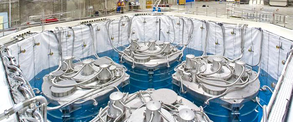

【基礎科研】大亞灣實驗的新結果
2017-05-07 02:34:00
原文网址：https://blog.udn.com/MengyuanWang/108908812
我在前文《回答王贻芳所长》中，曾提到高能所在大亚湾进行的Neutrino（中微子）实验是当今高能物理少数几个正确的投资方向之一。2017年四月4日，大亚湾的研究团队发表了一篇论文（参见https://arxiv.org/abs/1704.01082），详列了他们对过去三年多实验数据的分析结果，我在这里做个简单的介绍。
大亚湾中微子实验，三号反应室的外观，可与上方的工作人员做大小对比。
首先讨论一下Neutrino在标准模型（Standard Model）里面所占的地位。标准模型里有三大类粒子：构成物质的Fermion（费米子）、传播作用力场的Gauge Boson（规范波色子）和给予物质质量的Higgs（希格斯粒子）。Fermion是原子的组成成分，又依是否参加强作用力分为两类：Quark（夸克）和Lepton（轻子），前者是如中子和质子这些Hadron（强子）的组成成分，它们形成原子核；后者则包括电子和类似电子但比较重的Muon和Tauon，中微子则像是电子的跟班，但是不参加原子的组成。Muon和Tauon也有它们自己的中微子。
标准模型的这些Fermion有一个很奇怪的规则：它们形成三个世代（英文是Generation或者Family），世代与世代之间性质（亦即相对三大作用力的电荷）完全相同，只有质量（也就是相对于重力的“电荷”）不同。例如电子、Muon和Tauon，三者的电磁力电荷都是-1、强作用电荷都是0，参加弱作用力的方式也完全一样。为什么会有这样的规律性，是标准模型的未解秘密之一；即使是已经强加了几百个自由度的超对称理论，也只是无脑地复制这个规律，不能把它融入一个大架构里。
我们的宇宙主要由质子、中子和电子组成，它们都属于质量最轻的第一世代。当这些第一世代的物质进行核子反应（包括beta衰变、裂变和聚变）的时候，它们附带產生的，主要也是第一世代的电子中微子。太阳是个巨大的聚变反应炉，也是地球附近最大的中微子生產来源，这些来自太阳的叫做Solar Neutrino。
中微子在核物理滥觞的1930年代就被理论学家Pauli预言存在并且命名（Neutrino是意大利文里“中性的小东西”的意思，所以中译“中微子”或“微中子”都很贴切，我觉得前者更好些）。当时的核反应实验发现常常有一些动量和能量在反应的过程中“消失”了。既然动量和能量守恒是近代物理的基础之一，那么Pauli就假设有一个未知而且很难捕获的粒子从实验中脱逃，计算结果是那些消失的动量和能量刚好对应到一个质量为零或很小的费米子，所以中微子的存在很快被物理界接受。可是因为中微子对强作用力和电磁力的电荷都是零，只参加弱作用力，所以很少与物质反应，也就很难侦测到。1942年，中国核物理学家王淦昌在重庆提出了一个详细的实验设计，不过因为必须用很多放射性稳定的元素（最早用氯）在很嘈杂的背景下侦测到少数几个反应，一直到现代电子技术有所进步的1956年，才由美国的一个团队把实验做出来，证实了中微子的存在，实验者也得到了1995年的Nobel Prize。王淦昌当时还在世，没有一起得奖只能説是瑞典人的偏见。
要测量Solar Neutrino必须对它们定向，来自太阳方向才能算。这当然比侦测到随便任何一个中微子又难上一级，所以到1960年代后半，实验才完成。结果出人意料，侦测到的数量比理论预测少了三倍，这个发现被称为Solar Neutrino Problem。正确的解决方案在1968年，由费米的原助手Bruno Pontecorvo（因为被FBI指控为共產同路人，在1950年逃离美国而投奔苏联）提出，叫做Neutrino Oscillation。简单来説，中微子会自发地从一个世代变成另一个世代，虽然太阳產生的中微子都是第一世代，从太阳到地球的500秒飞行时间里，他们自发变化了许多次，到达地球的时候，已经大致平均分配到三个不同的世代，所以第一世代的数量就比预期少了三倍。但是Neutrino Oscillation只有在中微子不但有质量，而且质量是一个很特定的奇怪形式的前提下才可能发生。当时的物理界一般假设中微子质量为零，所以Pontecorvo的理论并没有被广汎接受，一直到1998年日本的Super-Kamiokande实验才完全证实了Neutrino Oscillation。1960年代发现Solar Neutrino Problem的实验者后来得到了2002年的Nobel Prize；证实Neutrino Oscillation的实验者则得到了2015年的Nobel Prize。贡献最大的Pontecorvo却因已在1993年于俄国去世，而与Nobel无缘。
在1970年代标准模型被确立之后，传统的建造更大更贵加速器的惯例，一而再、再而三地无功而返，到LHC的搜索结果又是空白，已经确定高能物理在比标准模型更高的能阶上有一个大沙漠。那么要发现新物理，就只能从精密测量着手。而中微子质量的奇怪形式，也就成为注意力的焦点。过去20多年，一连得了三个Nobel Prize，更是激起了高能物理界对各式各样的中微子实验的热情。但是中微子实验天生就很难做，背景杂讯比真正的讯号高了好几个数量级，所以很快就出现好几个Anomaly（异常现象），简单来説，就是实验结果和理论预期有两三个标准差的差距。现代高能物理实验非常复杂，所以两三个标准差是司空见惯，绝大多数会随着实验精度的提高而消失。如果Anomaly不消失，就代表着可能还有第四种中微子，那么就打破了三个世代的规律，将是超越标准模型的大突破。最近这几年，中微子实验的Anomaly，主要有四个，分别是LSND、Mini Boone、Gallium和Reactor Anomaly，有兴趣的人可以Google看看。这里我们专注于Reactor Anomaly。
Reactor Anomaly和Solar Neutrino Problem很相似，只不过中微子的来源换成为核裂变反应炉。原本实验结果和理论预测基本符合，但是在2011年，理论被改进了，预测值被拉高，实验结果变成低了6%，大约相当于两个标准差。大亚湾本身就是依托附近核电站的一个Reactor Neutrino实验，比较新、比较大，刚好适合用来解答这个问题。
大亚湾核电站每隔18个月要换一次燃料棒，在18个月的过程中，燃料棒里的铀235逐渐消耗，铀238却吸收中子而成为钚（Plutonium，臺湾写作钸）239，然后也会裂变產生热能，所以在一个18个月的周期里，一开始是铀235裂变產生中微子（严格来説，是反中微子，不过我们不须要在科普文章里对这样的细节吹毛求疵），慢慢地混入了一些钚239裂变產生的中微子，然后在换棒期间，这些过程基本中止。大亚湾的实验团队记录了每天的测量结果，然后和核电站的换棒周期做对比，结果发现只有对应着铀235裂变的中微子数量和理论有差距，那么很明显地，问题出在铀235反应的理论计算上，Reactor Anomaly并不是真的新物理。
大亚湾中微子实验反应室内部，反应剂容量为20吨。下一代的JUNO（Jiangmen Underground Neutrino Observatory，江门地下中微子实验）大1000倍，容量为20000吨。
高能物理的确已经走到尽头，中微子是最后还能做一些实验的少数项目之一。但它至少还是真科学，国家财政也负担得起，那么就钻研到底，把Anomaly一个一个检验排除吧，算是为人类社会满足好奇心的服务。不过整体来説，纯物理做为一个基础学科，它的进展速度比起上个世纪要困难迟缓得多，花费高得多，可能的成就反而小了许多，所以投资的性价比已经远远不如应用科学。中国以往落后于先进国家，只须盯着他人的既有成就，试图跟着复制即可。现在即将赶上第一梯队，反而不应该再一味往前衝。最尖端的研究有很多岔路，绝大多数是死巷子，甚至是有陷坑的，如果不事前做好理智的判断，择优集中财力人力，那么中国将蹈歷史上诸帝国好大喜功的覆辙，冒着透支国力的危险。美国在20多年前就有了这个觉悟，把许多空洞的研究计划裁撤了，中国应该听其言而观其行，在基础科研这个重要的方向，做出明智的选择。
14 条留言
我的问题是，在今后数十年的日子里，继续在理论物理，微观物理和高能物理里面投入大量的资源是否有意义？
反而是应用物理方面，包括纳米级别的物理属性，超低温物理属性可能会有更多成就，是否应该在这些方面投入更多资源？
高能物理绝对是已经走到尽头了。你看这篇正文里谈的中微子物理，基本上是高能里面还能做一点实验的极少数真科学项目，但也是越来越难，突破的希望越来越小。高能以外的纯科学科目好一点，但是和20世纪相比，新发展也是越来越难、越来越小。例如高温超导，多少聪明人投入，实验和高能比起来也容易多了，但是三十多年，就是弄不出一个完整的理论。
美国早已转向专注于应用性明显的科目，我觉得中国也必须参考这个做法。以往中国在科技上落后，正确的路别人都走过，只要两腿拼命赶就行了。现在开始赶上世界先进水准，没人能指出正确方向，那么其实前面的岔路，十条倒有九条是死巷子，若不用脑袋事先深思熟虑，再能跑的只怕也会累死。
我现在感冒，或许写得不好。过两天再看看能否解释得更清楚一点。
反而是搞应用这帮人硕果丰硕，我所知道的，站在顶端的，最少有六个人，材料方面就有四个，另外两个是在能量束。
2004年信心满满的那两人，当时他们刚刚进入博士后(Postdoctoral Fellowship),一个在北美，一个在欧洲。我最近知道北美的那个，现在在一个很一般的大学教力学，我估计他已经放弃了高能物理研究方向，不过详情要明年才知道。
为了社会整体的利益，国家有责任引导新一代的知识精英进入有前景的行业。
https://tieba.baidu.com/p/4771032809
暗物质的真面目
https://tieba.baidu.com/p/4781184717
宏观世界也存在波粒二象性
https://tieba.baidu.com/p/4777010617
以上是去年一位网友在贴吧发的帖子，他本人也是两个贴吧的吧主，另外他关注的“理论物理”吧有几十万个帖子。
tieba.baidu.com/.../main
回想30多年前，我们当时读中学的时候（90年代初），学校和老师都说，“学好数理化，走遍天下都不怕！”，于是，大量的品学兼优的学生都选择数理化，文科方面的人就相对偏少，今天中国的科技成就几乎都是那帮人在当顶梁柱。
看看今天，就不一样，整个社会变得急功近利，个个都为了找高薪工作或者是easy money而选择学业方向，大量的知识精英都往金融和计算机方向拥挤。据我一个当中学校长的同学说，他们学校前5-10％以内的学生，几乎都报考金融，计算机，和社会科学方面，稍微长得好一点的，就往传媒方向挤，为的是将来出来不是赚大钱，就是当官，或者是出名。而报考西方精英最集中的医学，法学方面的人几乎则集中在前10%以后。现状就是，理工科的生源，越来越差。
国家对知识精英的另外一个引导，我认为也有严重问题，比如他们现在正在推广的“万眾创业，大眾创新”，所谓的“双创”，实际上也问题严重。你看看他们创新的都是些什么东西？原来绝大多数都是所谓“商业模型”创新，我自己是生意人，所谓商业模型创新，实际上就是骗人的手法创新而已，或者是玩法创新。
你到中学看看，就知道为什么中国的医疗保健一直落后。原因是，根本就没有什么知识精英参与其中，特别是医学领域，绝对是重灾区，你一看，妈呀，现在当医生的，都是以前你们班上那些非常不起眼，甚至笨拙的同学，你敢找他看病吗？反正我是不敢。
我的结论是，一个健康正常的社会，必须有健康的文化和价值取向，我绝对不相信一个急功近利的社会文化能够获得坚实未来竞争力。
解决的办法，一方面必须让金融界不能赚大钱，另一方面必须像最近的“大国工匠”系列，奖励鼓吹有实用性质的技术研究和应用。我想习近平已经在做了，只是移风易俗，难度很大。
I fully agree. A healthy society, especially one as large as China, needs to be diversified. As China's economy grows, I think people will start to realize you don't have to all join a specific field to be successful. I think it's best to just let people find out what they like and study accordingly, instead of 'have to' join certain field.
Xi's new norm of medium speed growth will eventually teach the society to take its time and seek better optimization and balance.
呵，忍不住笑了起来。
王兄对金融之见，与Ｌ先生不谋而合－－近来，他在微信朋友圈大骂"金融活经济活 金融稳经济稳"这种说法，是葫芦娃式的乱搞（让那帮人活了，老百姓就得死了，诸如此类^_^）。
我认为习近平对金融和实业的态度还是让人放心的。中国未来一二十年内生物医学研究应该都会有巨大的进步。科研工作者的待遇和社会地位也在稳步提高，生源应该不是问题。我担心的是医疗体系的不完善造成医生行业出现大缺口（医学研究和医疗保健并不是一个概念）。中国现在对医生的评级制度太苛刻，而且过去十几年来医疗产业化造成的行业腐败，媒体煽风点火加剧的医患矛盾，已经使中国大量优秀的年轻医生外流，年轻人不想学医，不敢学医。我在德国遇到的留学生，绝大部分生命科学专业的都想着回国，绝大部分年轻医生都不想回国。
这样琐碎的一个小Anomaly，一样也得由几百个博士花几十亿来做实验，就算有突破也和人民生计无关。不过至少还算是真科学，财政上负担得起就让他们做吧。
医生在国外这么吃香，难免会有人才外流的问题。其实在全球化的背景下，有一些改革没办法做到底，尤其是对资本的控制，也是同样的道理。不过这里我觉得中国的确应该慢慢改进医生的职业环境。
I think it's best that Chinese government and their scholar come up a new way of measuring economy. Afterall, the concept of GDP and GNP are all 'artificial'. When we're talking about economy, the fundamentals are resources, population, infrastructure, and technology (productivity), etc. I believe that Chinese economy has come to a point that they should have new ways of measuring success and health of economy.
As for finance industry, this is currently China's achilles heel. The inability to provide healthy investment environment for Chinese will and has create problems. I'm not an expert in finance/investment industry. But it seems Xi's team of bureaucrats may lacks experts on this. The way I see it this is truly the last stage of reform China really needs. They overcome this, and they're on their way to success for next several decades.
其实我觉得等有富豪愿意私人捐钱，再建不迟。它和科学无关，基本上就是一座很大很贵的庙罢了。
说到“庙”，读您的《从少林来谈宣传和迷思》时理性上知道您说的是事实，但情感上一时还真接受不了，毕竟是看《少林寺》电影和读金、梁小说长大的。
不知您怎么看待这段武术PK搏击的争论，以及从夏朝断代延伸到古埃及和希腊是“伪史”的说法？有点跑题了，见谅！
至于夏朝，我认为是真实的可能性很大，但是至今的考古证据的确还没有到可确认的地步。Darwin提出演化论之后，有100多年，古生物学家就是找不到从鱼演化到两栖类之间的化石证据，最近才在加拿大找到了。我们再等等吧。
夏朝断代也是同理，首先是一部分人（中外皆有）抓住没出土过「夏」字这一点，将事实扭曲成中国古文明不存在，但实际上顶多只能说这个文明不一定管自己叫「夏」，但二里头显然是一个巨大而发达的古文明，对埃及希腊的怀疑则是对此的一种斗气式的反抗，很多持这种论调的人与其说是相信不如说是反讽，但如果真的相信，则也是过火及错误的
二里头只是一个城市，又没有足够的文字出土，所以还须要发现好几个其他类似的地点才能确认那个古文明的规模和层次。这是合理的科学态度，必须和我们自己主观的欲望划清界限。
离题很远了，到此为止。
我一直觉得中共对任何芝加哥大学经济系出身的人，都应该禁止入境。毕竟光算2008年一年，他们就摧毁了超过10，000，000，000，000美元的人类财富，破坏力之大，仅次于世界大战，远超人类歷史上恐怖分子的所有破坏的总和。这还只算了对财富总量的损害，他们真正的目标是搞贫富不均；我以前说过人类21世纪的最大挑战是贫富不均，就是拜他们之赐。
至于有一个章节在逻辑上是错误的，那指的是美国常用的金融教科书。这算是一个技术上的细节，我不想在此讨论。
这个留言，摆错地方了。
NZ overall economy therefore most (over 99%) of people's wellbeing has been deteriorating since the government hired many Economics graduates from Chicago University, the so called Neoliberalism worshippers...and yes the inequality problem has become so bad in this country...(although National govt has been bringing in heaps Asian mainly Chinese and now Indians immigrants with loads of cash to push the fake economic growth number...Sigh!